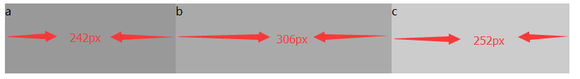

语法：
flex:扩展比率 收缩比率 默认基准值
说明：
flex 复合属性。设置或检索弹性盒模型对象的子元素如何分配空间。
如果缩写flex:1, 则其计算值为：1 1 0
none：none关键字的计算值为: 0 0 auto
flex-grow：定义弹性盒子元素的扩展比率。
flex-shrink：定义弹性盒子元素的收缩比率。
flex-basis：定义弹性盒子元素的默认基准值。
使用方法：
flex:0 0 auto; /*自由分配*/
兼容性：
- 浅绿 = 支持
- 红色 = 不支持
- 粉色 = 部分支持
| 支持版本\类型 | IE | Firefox | Safari | Chrome | Opera |
|---|---|---|---|---|---|
| 较早版本 | 6.0-10.0 | 4.0-19.0 | 5.1.7-6.0 | 21.0-28.0-webkit- | 9.-12.0 |
| 较新版本 | 11.0 | 20.0 | 7.0-webkit- | 29.0 | 12.1 |
橘色说明要加浏览器的前缀
事例：
现实用的比较少，如下面的计算就知道
<ul id="box3">
<li>a</li>
<li>b</li>
<li>c</li>
</ul>
#box3{display:-webkit-flex;display:flex;width:800px;margin:0;padding:0;list-style:none;}
#box3 li{height:100px;}
#box3 li:nth-child(1){-webkit-flex:1 1 300px;flex:1 1 300px;background:#999;}
#box3 li:nth-child(2){-webkit-flex:1 2 500px;flex:1 2 500px;background:#aaa;}
#box3 li:nth-child(3){-webkit-flex:1 3 600px;flex:1 3 600px;background:#ccc;}
分析如下：
上例中，定义了父容器宽（即主轴宽）为800px，由于子元素设置了伸缩基准值flex-basis，相加300+500+600=1400，那么子元素将会溢出1400-800=600px；
由于同时设置了收缩因子，所以加权综合可得300*1+500*2+600*3=3100px；
于是我们可以计算a,b,c将被移除的溢出量是多少：
a被移除溢出量：300*1/3100*600=3/31，即约等于58px
b被移除溢出量：500*2/3100*600=10/31，即约等于194px
c被移除溢出量：600*3/3100*600=18/31，即约等于348px
最后a,b,c的实际宽度分别为：300-58=242px, 500-194=306px, 600-348=252px
